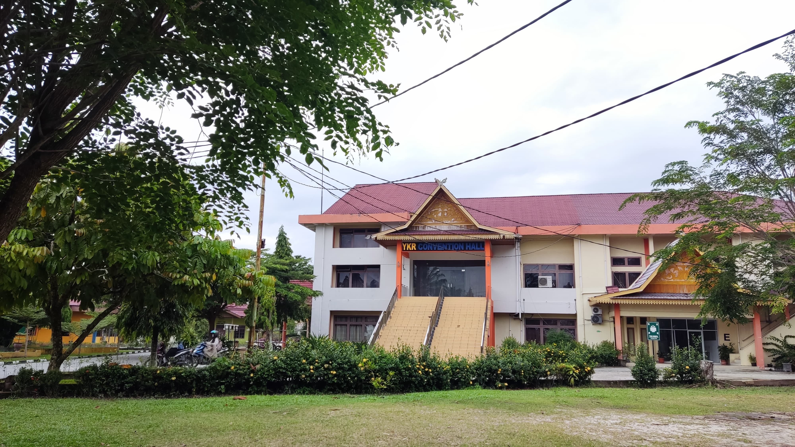

Pada tanggal 2 April 2024, sebuah momen bersejarah terjadi di Kantor Lembaga Layanan Pendidikan Tinggi (LLDikti) Wilayah X Kota Padang. Kepala LLDikti Wilayah X, Afdalisma, SH, M.Pd, secara resmi menyerahkan Surat Keputusan (SK) Mendikbud No. 232/E/O/2024 yang mengubah bentuk institusi pendidikan tinggi dari sekolah tinggi menjadi universitas. Perubahan ini melibatkan STMIK Amik Riau, yang kini resmi bertransformasi menjadi Universitas Sains dan Teknologi Indonesia (USTI).
Sekolah Tinggi Manajemen Informatika dan Komputer Amik Riau (STMIK Amik Riau) sebelumnya merupakan hasil penggabungan dari dua perguruan tinggi komputer pertama di Provinsi Riau, yaitu Sekolah Tinggi Manajemen Informatika dan Komputer Riau (STMIK Riau) dan Akademi Manajemen Informatika Komputer Riau (AMIK Riau). Kedua perguruan tinggi tersebut didirikan oleh Yayasan Komputasi Riau (YKR).
Kronologi & Akar Sejarah
1990 — Pendirian AMIK Riau
Didirikan sebagai jawaban atas tingginya kebutuhan tenaga kerja di bidang komputer di Provinsi Riau. Institusi ini menyelenggarakan jenjang pendidikan Diploma III Jurusan Manajemen Informatika berdasarkan izin Mendikbud RI No. 0233/0/1990. Pada tahun 1992, dibuka pula program Diploma I. AMIK Riau kemudian sukses terakreditasi oleh BAN-PT pada tahun 2005.
1996 — Pendirian STMIK Riau
Didirikan untuk menyelenggarakan jenjang pendidikan tingkat tinggi Strata I (S1) dengan Jurusan Teknik Informatika berdasarkan izin Mendikbud RI No. 52/D/0/1996. Program studi ini berhasil meraih status terakreditasi resmi pada tahun 2005.
2006 — Penggabungan Institusi (STMIK Amik Riau)
Demi meningkatkan efisiensi, efektivitas, serta mutu pelayanan pendidikan, dilakukan penggabungan kedua lembaga menjadi satu institusi terpadu, yaitu STMIK Amik Riau, berdasarkan Keputusan Mendiknas RI No. 40/D/O/2006. Institusi gabungan ini menaungi dua program studi unggulan: Teknik Informatika (S1) dan Manajemen Informatika (D3).
2011 — Peningkatan Akreditasi
Peningkatan status akreditasi dilakukan untuk kedua program studi, di mana hasil penilaian resmi dikeluarkan oleh BAN-PT melalui SK No. 019/BAN-PT/Ak-XI/Dpl-III/VII/2011 pada tanggal 21 Juli 2011.

Ayo Daftarkan Diri Kamu di USTI!
Jadilah bagian dari generasi unggul di bidang teknologi bersama Universitas Sains dan Teknologi Indonesia.
Kunjungi Pendaftaran Resmi